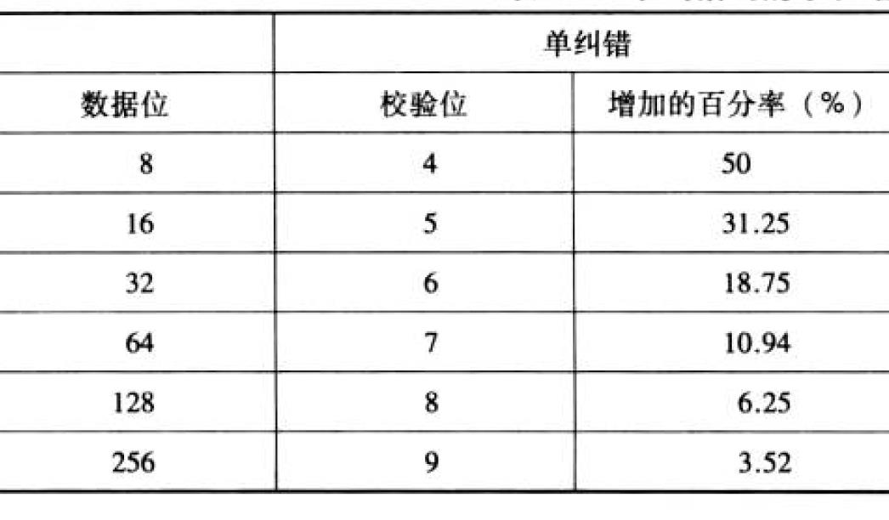
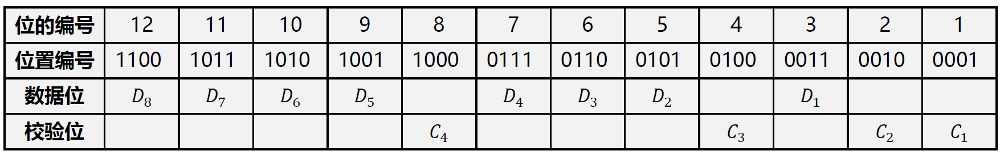

第10讲-数据校验码
差错（Error）
- 数据在计算机内部进行计算、存取和传送过程中，由于元器件故障或噪音干扰等原因，会出现差错
- 以存储为例
- 硬故障（hard failure）：永久性的物理故障，以至于受影响的存储单元不能可靠地存储数据，成为固定的“1”或“0”故障，或者在0 和1之间不稳定地跳变。由恶劣的环境、制造缺陷和旧损引起
- 软故障（soft error）：随机非破坏性事件，它改变了某个或某些存储单元的内容，但没有损坏机器。由电源问题或α 粒子引起
- 解决方案
- 从计算机硬件可靠性入手，在电路、电源、布线等方面采取必要的措施，提高计算机的抗干扰能力
- 采取数据检错和校正措施，自动发现并纠正错误
纠错（Error Correction）
- 基本思想：存储额外的信息以进行检错和校正
- 处理过程
- 数据输入：使用函数𝑓在𝑀位数据𝐷上生成𝐾位校验码𝐶
- 数据输出：使用函数𝑓在𝑀位数据𝐷 上生成新的𝐾位代码𝐶”，并与取出的𝐾位码𝐶 进行比较
- 没有检测到差错：使用数据𝐷
- 检测到差错且可以校正：校正数据𝐷 来生成数据𝐷”，并用数据𝐷
- 检测到差错但无法纠正：报告
奇偶校验码
基本思想：增加1 位校验码来表示数据中1 的数量是奇数还是偶数
- 奇校验：使传输的数据（数据位 校验位）中有奇数个1
- 偶校验：使传输的数据（数据位 校验位）中有偶数个1
处理过程
- 假设数据为𝐷𝑀 … 𝐷2 𝐷1
- 数据输入
- 奇校验：𝐶 = 𝐷𝑀 $\bigoplus$ … $\bigoplus$𝐷2 $\bigoplus$ 𝐷1$\bigoplus$1
- 偶校验：𝐶 = 𝐷𝑀 $\bigoplus$ … $\bigoplus$𝐷2 $\bigoplus$ 𝐷1
- 数据输出
- 奇校验：𝐶’ = 𝐷’𝑀 $\bigoplus$ … $\bigoplus$𝐷’2 $\bigoplus$ 𝐷’1$\bigoplus$1
- 偶校验：𝐶’ = 𝐷’𝑀 $\bigoplus$ … $\bigoplus$𝐷’2 $\bigoplus$ 𝐷’1
- 检错：S = 𝐶′$\bigoplus$′ 𝐶′
- 𝑆=0：正确/数据中出错的位数为偶数
- 𝑆=1：数据中出错的位数为奇数
- 优点：代价低（只需要1 位额外数据，计算简单）
- 缺点：不能发现出错位数为偶数的情形；发现错误后不能校正。
- 适用于对较短长度（如1 字节）的数据进行检错
海明码
- 基本思想：将数据分成几组，对每一组都使用奇偶校验码进行检错
- 处理过程
- 将𝑀位数据分成𝐾组
- 数据输入：为数据𝐷中每组生成1 位校验码，合并得到𝐾位校验码𝐶
- 数据输出：为数据𝐷 中每组生成1 位校验码，合并得到新的𝐾位校验码𝐶
- 检错：将校验码𝐶 和取出的校验码C’ 按位进行异或，生成𝐾位故障字（syndrome word）
- 校验码长度
- 假设最多1 位发生错误
- 可能的差错
- 数据中有1 位出现错误：𝑀
- 校验码中有1 位出现错误：𝐾
- 没有出现错误：1
- 校验码的长度：2𝐾 >𝑀+ 𝐾+1
 - 故障字的作用
- 每种取值都反映一种情形（数据出错/校验码出错/未出错）
- 规则
- 全部是0：没有检测到错误
- 有且仅有1 位是1：错误发生在校验码中的某一位，不需要纠正
- 有多位为1：错误发生在数据中的某一位，将𝐷 中对应数据位取反即可纠正（得到𝐷”）
- 数据位划分
- 假定数据位为8位𝐷 = 𝐷8 … 𝐷2𝐷1, 校验码为4位𝐶 = 𝐶4𝐶3𝐶2𝐶1
- 数据位/校验码与故障字的关系
- 数据位划分
𝐶1 = 𝐷1 ⊕ 𝐷2 ⊕ 𝐷4 ⊕ 𝐷5 ⊕ 𝐷7
𝐶2 = 𝐷1 ⊕ 𝐷3 ⊕ 𝐷4 ⊕ 𝐷6 ⊕ 𝐷7
𝐶3 = 𝐷2 ⊕ 𝐷3 ⊕ 𝐷4 ⊕ 𝐷8
𝐶4 = 𝐷5 ⊕ 𝐷6 ⊕ 𝐷7 ⊕ 𝐷8

码距和纠错理论
- 码距：同一编码中，任意两个合法编码之间不同二进制数位数的最小值
- {0000, 0001, 0010, 0011} 码距为1
- {0000,0011} 码距为2
- 纠错理论：𝑳 - 𝟏 = 𝑫 + 𝑪
- 𝐿是码距，𝐷 是检错位数，𝐶 是纠错位数
- 奇偶校验的码距是2，1 位能检错，不能纠错
- 海明码的码距是3，1 位能检错和纠错
循环冗余校验
- 奇偶校验问题：额外成本很大；要求将数据分成字节
- 循环冗余校验（Cyclic Redundancy Check, CRC）
- 适用于以流格式存储和传输大量数据
- 用数学函数生成数据和校验码之间的关系
- 基本思想：假设数据有M 位，左移数据K 位（右侧补00），并用K+1 位生成多项式除它（模2 运算）
- 采用K 位余数作为校验码
- 把校验码放在数据（不含补的00）后面，一同存储或传输。
- 校错：如果M+K 位内容可以被生成多项式除尽，则没有检测到错误；否则，发生错误。
本博客所有文章除特别声明外，均采用 CC BY-NC-SA 4.0 许可协议。转载请注明来自 Sprooc！
评论